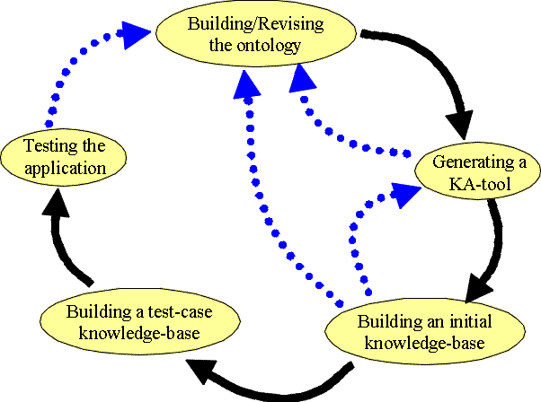

The development of a successful knowledge-based system built with Protégé-2000 is more of an art than a science. Nonetheless, we can suggest a standard pattern of use that new users should follow to avoid some possible problems of systems development. Protégé-2000 is designed to support iterative development, where there are cycles of revision to the ontologies and other components of the knowledge-based system. Therefore developers should not expect to "complete" ontology development without considering other aspects of the process.
For the development of a successful Protégé-2000 project, we would recommend the following steps:
The picture below shows this typical pattern of use for the Protégé-2000 subsystems. The black arrows indicate the forward progression through the process, while the blue dotted arrows show places where revisions are usually necessary (either to the ontology or the knowledge-acquisition tool).

At the heart of a successful Protégé-2000 project is the design of the class and slot structure of the ontology. In particular, the model you use in building your ontology must balance the needs of the domain expert when building a knowledge base (at knowledge-acquisition time) against the requirements of your problem-solving method or application (at run-time). Hopefully, these are not too contradictory! Ontology developers should therefore both:
As a simple example from the Newspaper Example, a problem to be solved could be finding all advertisements that are more expensive than some threshold. For this problem, one should build into the ontology a class for advertisements that includes price and date published. If this information were spread out over all publication issues, then it would be more difficult for the problem-solver to access all instances of advertisements and their prices.
Next: A Newspaper Example